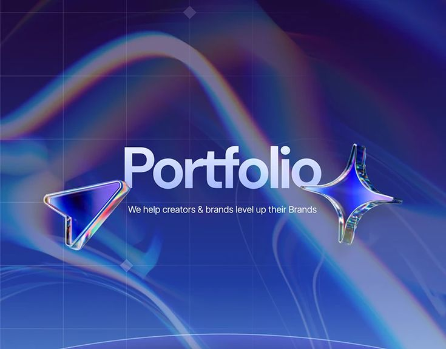

Proyectos
He formado parte de varios proyectos como Infection Network, Desafío 3 Java y Memphis Club, ocupando roles desde helper hasta owner. Contribuí en el desarrollo de un launcher oficial, optimización de mods, construcción de mapas y rediseño de servidores de Discord. Estas experiencias me permitieron crecer en gestión, diseño y resolución dentro de comunidades activas.